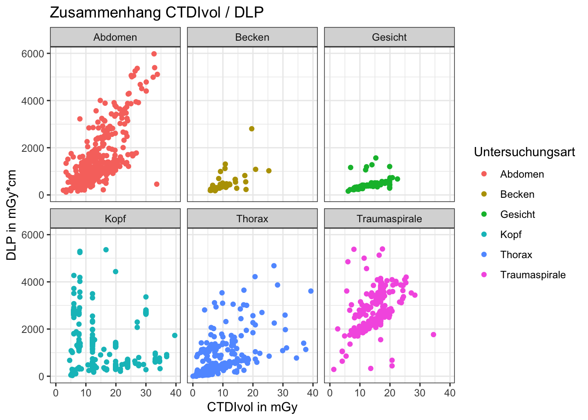

3 Deskriptive Statistik in R
Visualisierung ist natürlich schon gut um einen ersten schnellen Überblick über Daten zu bekommen, aber früher oder später geht es ans Eingemachte und es müssen harte und genaue Zahlen her. Einige der wichtigen Zahlen, die unsere Daten beschreiben sind sogenannte deskriptive Statistiken. Darunter fallen so einfache Dinge wie der Mittelwert, aber auch andere Werte wie Standardabweichung, Median, Minimum, Maximum und Quartile oder auch seltener gebrauchte Werte wie der Modus, Kurtosis und Varianz.
3.1 Lernziele
In diesem Kapitel werden folgende Themen besprochen:
- deskriptive Statistiken in R erstellen
- nach Gruppen aufgeteilte deskriptive Statistiken erstellen
- „tidyverse“-Funktionen nutzen, um tiefere Einblicke in die Daten zu erhalten
- Boxplots erstellen und verstehen
- nach Gruppen getrennte Grafiken erstellen
3.2 Deskriptive Statistiken mit Basis R
Erfreulicherweise lassen sich die meisten der Werte für einfache deskriptive Statistiken mit Basis R Funktionen berechnen. Die entsprechenden Funktionen sind nach dem zu berechnenden Wert benannt und im Grunde selbsterklärend.
min(daten$dlp)## [1] 1.2mean(daten$dlp)## [1] 1126.547median(daten$dlp)## [1] 576max(daten$dlp)## [1] 5979.3Es wäre natürlich insbesondere in großen Tabellen müßig, jede Spalte einzeln aufzurufen. Die Funktion summary() hilft hier und berechnet diese Werte und einige mehr gleich für alle Spalten eines Dataframes. Besonders praktisch hieran: für Spalten, die keine numerischen Werte enthalten, erhält man trotzdem einige praktische quantitative Werte.
summary(daten)## tag untersuchung kv mas
## Min. :2018-01-01 Length:2441 Min. : 12.0 Min. : 2.0
## 1st Qu.:2018-02-24 Class :character 1st Qu.:120.0 1st Qu.: 92.0
## Median :2018-04-13 Mode :character Median :120.0 Median : 150.0
## Mean :2018-04-14 Mean :114.5 Mean : 156.9
## 3rd Qu.:2018-06-04 3rd Qu.:120.0 3rd Qu.: 206.0
## Max. :2018-07-31 Max. :801.0 Max. :1231.0
## ctdi.vol dlp
## Min. : 0.05 Min. : 1.2
## 1st Qu.: 5.50 1st Qu.: 244.6
## Median : 8.00 Median : 576.0
## Mean :10.30 Mean :1126.5
## 3rd Qu.:14.30 3rd Qu.:1795.3
## Max. :39.60 Max. :5979.3Mit den zwei Funktionen str(), die uns einen Überblick über die Struktur eines Dataframes gibt, und der summary() Funktion ergibt sich in den meisten Fällen ein recht guter Eindruck der vorliegenden Daten.
Aber oftmals ist nicht so sehr der Überblick über die gesamten Daten gefragt, vielmehr wären nach Gruppen getrennte deskriptive Statistiken von Interesse. Hierzu bietet Basis R die Funktion by, die in der Benutzung zwar etwas unintuitiv ist, aber genau diese Funktionsweise abbildet. Als ersten Parameter erwartet by() einen Vektor (meist also eine Spalte eines Dataframes), auf den nach dem als zweiten Parameter übergebenen Gruppenvektor die als dritter Parameter übergebene Funktion angewandt wird.
# erster Parameter: die zu untersuchenden Werte
# zweiter Parameter: die Gruppenvariable
# dritter Parameter: die anzuwendende Funktion (ohne runde Klammern!)
by(daten$dlp, daten$untersuchung, median)## daten$untersuchung: Abdomen
## [1] 714.85
## ------------------------------------------------------------
## daten$untersuchung: Becken
## [1] 341.8
## ------------------------------------------------------------
## daten$untersuchung: Gesicht
## [1] 379.4
## ------------------------------------------------------------
## daten$untersuchung: Kopf
## [1] 1433
## ------------------------------------------------------------
## daten$untersuchung: Thorax
## [1] 219
## ------------------------------------------------------------
## daten$untersuchung: Traumaspirale
## [1] 2674.9# die Ausgabe kann bei vielen Gruppen und Funktionen, die lange
# Ausgaben produzieren mitunter recht unübersichtlich werden.
# Die Ausgabe dieses Befehls wird deshalb hier nicht gezeigt.
by(daten, daten$untersuchung, summary)3.3 Deskriptive Statistiken im Tidyverse
Das Berechnen deskriptiver Statistiken ist keine Aufgabe, für die im Tidyverse per se spezielle Funktionen bereitstehen. Trotzdem bieten einige Funktionen umfangreiche Möglichkeiten fast spielerisch mit den Daten zu interagieren und einfach und schnell Daten zu selektieren, zu gruppieren und auszuwerten.
library(tidyverse)Die wichtigsten Funktionen sind hierfür die Funktionen select() (wählt Spalten aus), filter() (wählt Zeilen aus), group_by() (bildet Gruppen) und summarise() (führt Berechnungen für Gruppen aus). Mithilfe von arrange() können wir die entstehende Ausgabe auch noch nach einer Spalte sortieren. Diese Funktionen lassen sich in nahezu beliebiger Weise mit %>% verketten und sind trotzdem relativ einfach zu lesen.
Für ein erstes Beispiel wollen wir zum Beispiel unsere Daten nach Untersuchungsbeschreibung gruppieren, dann den Median von CTDI (in mGy wie in der ursprünglichen Tabelle und direkt auch durch 10 geteilt in cGy) und DLP berechnen, sowie die Anzahl der jeweiligen Untersuchungen. Und um die Daten noch leichter fassbar zu machen, soll die Ausgabe nach dem Median des CTDI sortiert werden. Der Übersichtlichkeit halber lohnt es sich statt lange Zeilen zu schreiben, die einzelnen Teile der Befehle auf mehrere Zeilen aufzuteilen.
daten %>%
group_by(untersuchung) %>%
summarise(
median_ctdi_mGy = median(ctdi.vol),
median_ctdi_cGy = median(ctdi.vol) / 10,
median_dlp = median(dlp),
anzahl = n()
) %>%
arrange(-median_ctdi_mGy)## # A tibble: 6 × 5
## untersuchung median_ctdi_mGy median_ctdi_cGy median_dlp anzahl
## <chr> <dbl> <dbl> <dbl> <int>
## 1 Traumaspirale 16.9 1.69 2675. 273
## 2 Gesicht 12.2 1.22 379. 97
## 3 Abdomen 10.0 1.01 715. 682
## 4 Becken 9.3 0.93 342. 49
## 5 Kopf 7.7 0.77 1433 523
## 6 Thorax 4.8 0.48 219 817In ähnlicher Weise könnten wir auch bspw. zunächst die Daten nach Untersuchungen filtern, bei denen genau 100kV am Gerät eingestellt waren, dann einige der Werte aus dem letzten Beispiel berechnen und zuletzt in der Ausgabe nur diejenigen Untersuchungensbezeichnungen auflisten, die weniger als 100 mal mit 100kV durchgeführt wurden. Zu guter letzt könnte man auch noch die Spalte Anzahl aus der Ausgabe entfernen, sodass nur die berechneten Werte bleiben.
daten %>%
filter(kv == 100) %>%
group_by(untersuchung) %>%
summarise(
median_ctdi_mGy = median(ctdi.vol),
median_dlp = median(dlp),
anzahl = n()
) %>%
filter(anzahl < 100) %>%
select(-anzahl)## # A tibble: 4 × 3
## untersuchung median_ctdi_mGy median_dlp
## <chr> <dbl> <dbl>
## 1 Abdomen 5.95 796.
## 2 Becken 11.2 474.
## 3 Gesicht 12.2 1194.
## 4 Traumaspirale 10.7 2448.Die Stärke des Tidyverse liegt hier sicher in der Möglichkeit, interaktiv Befehle zu verketten. Man schreibt einige Befehle auf, von denen man glaubt, dass sie das gewünschte Ergebnis bringen könnten oder den Weg dorthin darstellen, führt diese aus und betrachtet die Ausgabe. Dann passt man die Befehle an oder erweitert die Kette um weitere bis man schließlich das gewünschte Ergebnis erhält.
3.4 Deskriptive Statistiken mit anderen Paketen
Wie bereits erwähnt, ist eine der herausragenden Eigenschaften von R, dass unzählige Pakte existieren, die verschiedene Funktionen bereitstellen und so das Arbeiten vereinfachen. Zwei sehr gute Pakete für deskriptive Statisiken sind psych und summarytools. Diese können, wie Tidyverse im vorherigen Kapitel, über die entsprechenden Funktionen von RStudio oder über die Konsole installiert werden.
3.4.1 Psych
Aus dem Paket psych können wir die Funktion describe() benutzen, um eine Vielzahl von Maßzahlen zu berechnen.
library(psych)
describe(daten)## vars n mean sd median trimmed mad min max
## tag 1 2441 NaN NA NA NaN NA Inf -Inf
## untersuchung* 2 2441 3.64 1.81 4 3.68 1.48 1.00 6.0
## kv 3 2441 114.47 18.77 120 117.36 0.00 12.00 801.0
## mas 4 2441 156.93 92.65 150 150.06 85.99 2.00 1231.0
## ctdi.vol 5 2441 10.30 6.98 8 9.44 5.93 0.05 39.6
## dlp 6 2441 1126.55 1142.93 576 960.73 622.10 1.20 5979.3
## range skew kurtosis se
## tag -Inf NA NA NA
## untersuchung* 5.00 -0.49 -1.30 0.04
## kv 789.00 19.45 731.66 0.38
## mas 1229.00 1.79 13.34 1.88
## ctdi.vol 39.55 1.21 1.40 0.14
## dlp 5978.10 1.18 0.51 23.13Die üblichen Quartile erhält man, wenn man der describe()-Funktion einen entsprechenden zusätzlichen Parameter übergibt. Ebenfalls kann man describe() mitteilen, dass nicht-numerische Werte übersprungen werden sollen.
describe(daten, quant=c(.25,.75), omit = TRUE)## vars n mean sd median trimmed mad min max range
## kv 3 2441 114.47 18.77 120 117.36 0.00 12.00 801.0 789.00
## mas 4 2441 156.93 92.65 150 150.06 85.99 2.00 1231.0 1229.00
## ctdi.vol 5 2441 10.30 6.98 8 9.44 5.93 0.05 39.6 39.55
## dlp 6 2441 1126.55 1142.93 576 960.73 622.10 1.20 5979.3 5978.10
## skew kurtosis se Q0.25 Q0.75
## kv 19.45 731.66 0.38 120.0 120.0
## mas 1.79 13.34 1.88 92.0 206.0
## ctdi.vol 1.21 1.40 0.14 5.5 14.3
## dlp 1.18 0.51 23.13 244.6 1795.3Eine ebenfalls sehr praktische Funktion ist die der Base-R Funktion by() (s.o.) nachempfundenen describe.by() Funktion. Dieser können die selben Parameter mitgegeben werden, wie der einfachen describe() Funktion.
# Da auch hier die Ausgabe sehr lang würde, wird sie hier nicht abgebildet.
describe.by(daten, daten$untersuchung, quant=c(.25,.75), omit = TRUE)3.4.2 Summarytools
Auch im Paket summarytools existieren Funktionen, die ähnliche Ausgaben erzeugen wie die Funktion describe() aus dem psych Paket. Welche Pakete man letztenendes benutzen will, ist Frage des persönlichen Geschmacks. Die entsprechenden Funktionen in summarytools sind dscr() bzw. stby()
library(summarytools)
descr(daten)## Descriptive Statistics
## daten
## N: 2441
##
## ctdi.vol dlp kv mas
## ----------------- ---------- --------- --------- ---------
## Mean 10.30 1126.55 114.47 156.93
## Std.Dev 6.98 1142.93 18.77 92.65
## Min 0.05 1.20 12.00 2.00
## Q1 5.50 244.60 120.00 92.00
## Median 8.00 576.00 120.00 150.00
## Q3 14.30 1795.30 120.00 206.00
## Max 39.60 5979.30 801.00 1231.00
## MAD 5.93 622.10 0.00 85.99
## IQR 8.80 1550.70 0.00 114.00
## CV 0.68 1.01 0.16 0.59
## Skewness 1.21 1.18 19.45 1.79
## SE.Skewness 0.05 0.05 0.05 0.05
## Kurtosis 1.40 0.51 731.66 13.34
## N.Valid 2441.00 2441.00 2441.00 2441.00
## Pct.Valid 100.00 100.00 100.00 100.00# Da auch hier die Ausgabe sehr lang würde, wird sie hier nicht abgebildet.
stby(daten, daten$untersuchung, descr)Noch viel praktischer, aber leider nicht nach Gruppen aufgetrennt durchführbar, ist die Funktion dfSummary(), insbesondere wenn man ihre Ausgabe weiterleitet an die Funktion view() aus dem summarytools Paket. Diese produziert dann eine ansprechend formatierte HTML-Datei, in der verschiedene Maßzahlen aufgeführt werden.
Um nach Gruppen getrennte Ausgaben zu bekommen, kann man beispielsweise die tidyverse filter() Funktion benutzen, muss dann aber die Befehle für jede Gruppe erneut ausführen.
# die Ausgaben dieser Funktionen erscheinen nicht auf der Konsole,
# sondern im Viewer-Pane von RStudio. Dort findet man auch einen Button,
# um die Datei in einem Internetbrowser zu öffnen.
# einfacher Fall, um einen Überblick über alle Daten zu erhalten
dfSummary(daten) %>% view()
# innerhalb einer tidyverse-Kette um bspw. einen Überblick über
# die Traumaspiralen zu erhalten
daten %>%
filter(untersuchung == "Traumaspirale") %>%
dfSummary() %>%
view()3.5 Mehr bunte Bilder
Um deskriptive Statistiken auch grafisch nach Gruppen zu trennen, bietet sich die Funktion facet_wrap() an, die ebenfalls Teil von ggplot2 ist. Im Prinzip kann man sich die Funktionsweise ähnlich wie die by() Funktion vorstelen, wobei die Handhabung noch etwas simpler ist. Man definiert einfach wie gewohnt die Grafik die man mit ggplot() erstellen möchte, und fügt facet_wrap() einfach mit + in die Kette der Grafikfunktionen. Innerhalb von facet_wrap() muss noch etwas umständlich die entsprechende Gruppenvariable in die Funktion vars() eingeschlossen werden, aber die Ergebnisse sind sehr ansprechend.
# ähnliche Grafik wie am Ende des letzten Kapitels, aber mit
# nach Untersuchung getrennten Ausgaben, damit die Punkte
# weniger überlappen.
daten %>%
ggplot(aes(x = ctdi.vol, y = dlp, color = untersuchung)) +
geom_point() +
facet_wrap(vars(untersuchung)) +
labs(
x = "CTDIvol in mGy",
y = "DLP in mGy*cm",
title = "Zusammenhang CTDIvol / DLP",
color = "Untersuchungsart"
) +
theme_bw()
Natürlich funktioniert facet_wrap() nicht nur mit Punktwolken, sondern letztlich mit beliebigen Grafiken. Da sich für deskriptive Statistiken insbesondere Boxplots anbieten, im nachfolgenden Beispiel eine etwas komplexere Grafik. In dem Fall wird zunächst die Variable kv mithilfe der Funktion mutate() statt als numerische Variable als ordinale Variable definiert. Zur besseren Übersichtlichkeit werden nur die Fälle betrachtet mit 80kV, 100kV und 120kV. Der Rest ist dann wie gewohnt die Definition der Grafik und das Aufteilen mittels facet_wrap().
daten %>%
mutate(kv = as.factor(kv)) %>%
filter(kv %in% c(80, 100, 120)) %>%
ggplot(aes(x = kv, y = dlp, fill = kv)) +
geom_boxplot() +
facet_wrap(vars(untersuchung)) +
labs(
x = "kV-Einstellung",
y = "DLP in mGy*cm",
title = "DLP in Abhängigkeit von kV-Einstellung",
fill = "kV-Einstellung"
) +
theme_bw()